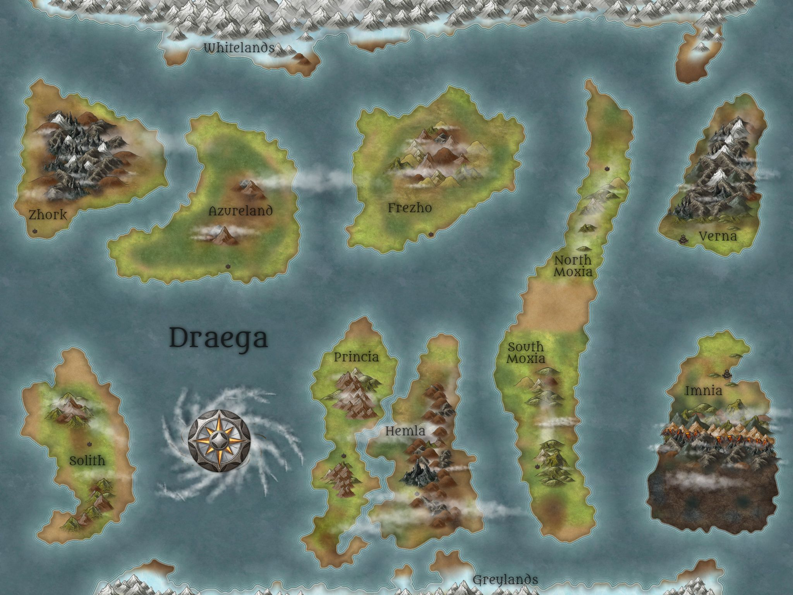
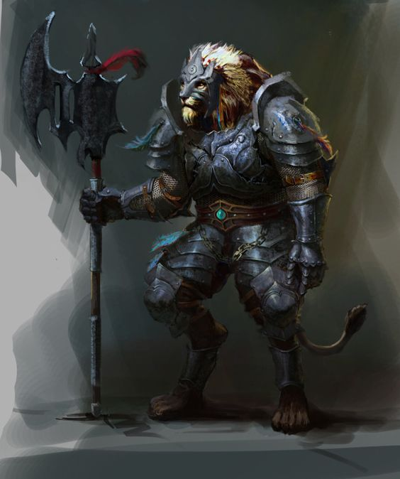
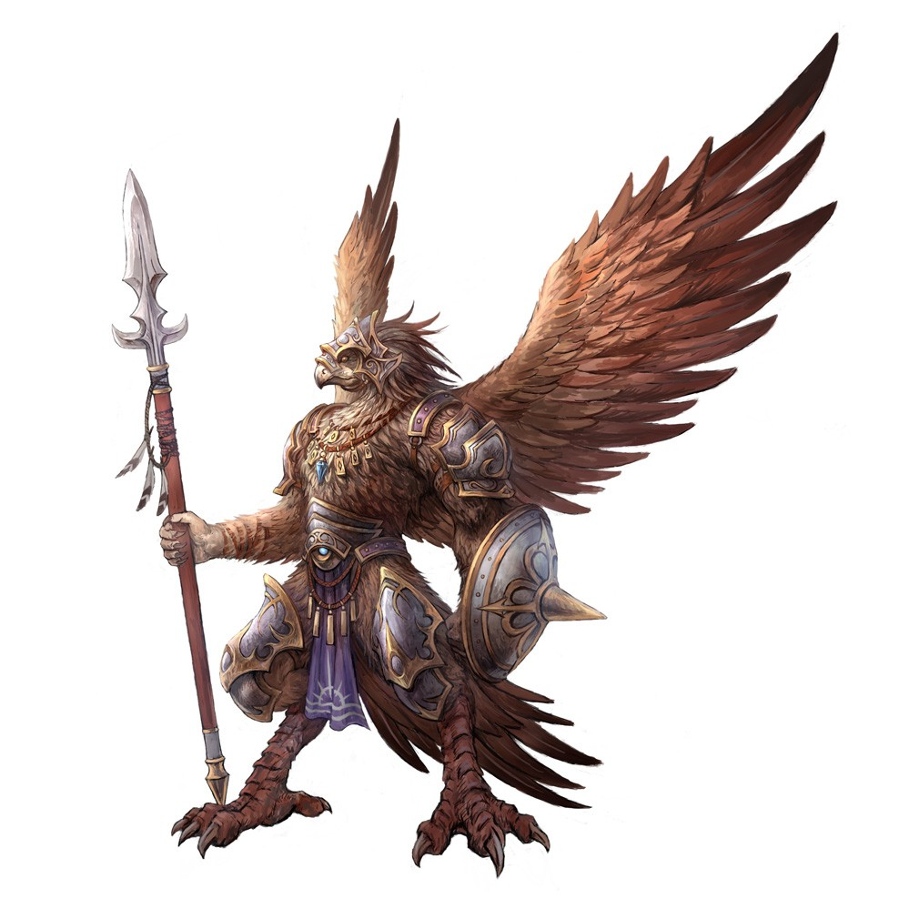
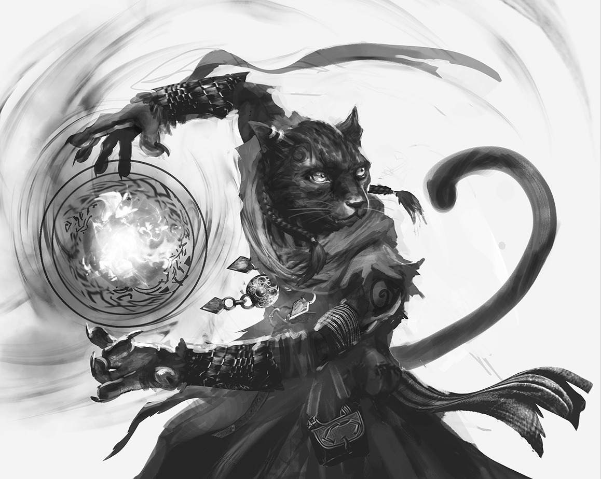

Rivals and Destiny
Four people set out to help one dwarven girl and ended up committing treason against an entire world. Known in Zhork as The Radicals, they joined the global uprising against the Froscius Dynasty. Twenty five sessions followed. This is the record of getting them out of the room they were played in.
The World
Draega keeps a calendar that nobody from anywhere else can use, which is the first honest thing to say about it. The year runs three hundred and sixty days, the month runs five weeks, the week runs six days, and the day runs twenty five hours. Somebody worked all that out before anybody wrote a word of history on it. The weather got built on top of the arithmetic rather than the other way round.
Two moons hang over the place and neither one is ever anything but full. They circle each other while they circle the world, which is a thing worth standing outside to watch once. Phoegrin is the red one. It brings the winter and closes every cycle, and the people under it call it the bringer of death without any particular drama. Aqgui is blue, is thought to be made entirely of water, and opens what the other one ends. Neither borrows its light from the sun. So night on Draega comes down red and blue at once. An eclipse floods the whole planet with whichever of them got there first.
The oceans do most of the deciding on this world, and every sailor learns that before learning anything else. A maelstrom of slow smoke and cloud turns in the middle of the Kladesh. It is the first thing anybody is told about, and the last thing a good few of them ever saw. The White Ocean takes its name from the caps on its waves rather than from the frozen continent it happens to wrap. Tides running up from the south collide in it hard and in no pattern anyone has written down. That is why almost none of it can be sailed, and why it holds the deepest water on the planet.
Ice takes both ends of the world and neither end is hospitable to anybody reading this. The Greylands in the south belong to the Ice Giants, who govern nothing because nobody has ever turned up to contest them. Rare elements sit under that ice and nobody has found a way to lift them. The Whitelands in the north are plain white and carry more life than the south. All of it is hunting the ocean or hunting each other.
In between the ice, each continent does one thing well and rather less of everything else. Zhork is rock and volcano and dwarves, and it built the printing press. Imnia is fertile in the north and overrun by the dead in the south. The only thing holding those two halves apart is a volcano range running east to west. Vernax is barren and full of metal. That is why the whole world wants it, and why the settlements on it will not stop fighting each other.
The multiverse files the whole planet as a backwater, and the filing is accurate. Every god in existence has followers here and not one of them has the numbers they draw elsewhere. Outsiders arrive by accident or by divine intervention and almost never by intention. Draega sits far enough out that being left alone is the main feature rather than a complaint. Worth knowing before four people start a war on it.

Continents, oceans, settlements and a timeline that runs back a hundred and twenty three million years. Written down as it was invented, gaps left showing.
Enter the Draega Archive →The Recordings
Two takes, 148 minutes, five microphones, nineteen thousand words
Off a Zoom card that sat in a drawer for five years. Transcribed on 6 September 2026 with consent from the people at the table, which is the ruling everything else here waited on.
Reads at one megabyte a second, and is being read
The files fail at file level and every sector underneath them reads clean, which means the index is broken and the audio is very likely still there. Nothing is released. When it is, it starts on this page.
The Party
Four players. Two of them were written up in 2020 and two were still carrying the surname Something.
A half elf of eighteen, five foot four and a hundred and fifteen pounds, with violet eyes that shine with the light of the lotus petal. His armour was his father's and it sags on him, the leather rotting and the metal worn. Raised in Paradiso by an elven cleric and a retired soldier, in a house the whole town came to when it needed something.

Seven and a half feet of Leonin samurai, a scar across the left eye, a tail tufted with fire at the tip, and a daisho on his hip. The Pride Spires were a stone amphitheatre crowned with pinnacles until a Dynasty force nobody could track destroyed them. Finding that force is why he left Azureland.
The Empire's People

An aarakocra cleric of the Silent, six feet tall, with a beak of gold and white feathers that make his face impossible to read. A wizard in debt to the Empire stole him as an egg. They clipped his wings to break the free spirit out of him, gave him back flight as a graduation gift, then clipped them a second time when the Silent took him.

Six foot nine of tabaxi, black fur with darker rings through it, a crescent scar above the left eye that gets a different story every time. She goes barefoot on soft pink pads to keep her steps quiet. Caught pickpocketing at nine, handed over by her own choice to save her family, and raised in a learning centre into a monastery that trained spies for the Empire.
A tiefling of five foot six, pale as a banshee, one neon green streak through a long black braid. His eyes are solid gold without pupils, so his stare has no direction and always seems to land on you. The grin runs ear to ear and never comes off. Left at an orphanage in Glazhenge in a second hand basket.
A fellow trickster Alistair met over a gambling table. Between them they worked out how to alter the chances at any table they sat down at, and then past it.
Reference art gathered in 2020. The written descriptions came from the sheets and are the record where the two disagree.
Where to Listen
Nowhere yet. The recordings exist and the consent exists and the plumbing does not. The notes feed carries the record of getting there, and the day it lands the links go here.